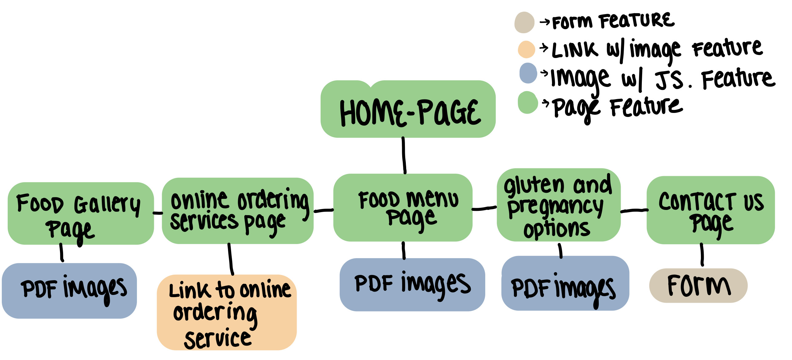

Project Overview
This Web Application is for a client outside of the class and the primary goal of the application is to promote their professional business. As of right now, the business does not have a copy of their current menu online yet. They hope that through this project, they can have a website that promotes their business, showcase their food, provide contact information, provide online ordering websites, and have a current menu for customers to read. This website is mainly for customer use.
That being said, the goal of this project is to have 6 pages,
- A HomePage
- Food Gallery Page
- Online Ordering Services Page
- Food Menu Page
- Gluten and Pregnancy Options
- Contact Us Page
Client Information
Mai Nguyen
Sushi Star LLC in Huntersville NC
sushistarnc@gmail.com
704-948-7877
WireFrame and SiteMap

Page Design
HomePage:
- The title will be “Sushi Star NC Project Website” with a subheading saying “Homepage”.
- This page will be the index page for the project. It will have a mini slideshow showcasing some of the food options. It will also have a mini summary of the purpose of the website and why it is a “project”.
- Customers will be the users of this page.
- A small slideshow showcasing the food products and a mini summary of the purpose of the slideshow will be part of the homepage.
- There would be no need for the user to input data in this page.
- There would be no need to validate anything.
- There will be no button on this page other than the buttons to check the html and the css.
- The html and css buttons will direct the user to another page that certifies that it is working.
- The plan is to use jquery for the slideshow.
Food Gallery Page:
- The title will be “Sushi Star NC Project Website” with a subheading saying “Food Gallery Page”.
- This page will be one of the first features in this project. After clicking this link, the user will be moved to another page that showcases Sushi Star’s food products.
- Customers will be using this page.
- There will be a summary at the top of the page then 2 sections below the summary, each being a slideshow showcasing the food products.
- There would be no need to put user data in this page.
- There would be no need to validate anything.
- There will be no buttons other than the buttons to check the html code and the css.
- No new features other than the 2 slideshows.
- The plan is to use jquery for the two slideshows and moving text.
Online Ordering Services Page:
- The title will be “Sushi Star NC Project Website” with a subheading saying “Online Ordering Services Page”.
- The goal of the page is to give information to customers regarding their current delivery services. There will be images of the delivery service logo and attached to the image should be a link to the delivery page.
- The goal of this page is for customers.
- This page will not be asking for any data.
- Since the page will not be asking for data, there will be no need to validate something that will not exist.
- There will be buttons to take the user to the delivery service page as well as hyperlinks to the instructions on how to use a delivery service.
- The buttons will take the user to the delivery service page.
- No new features will be added to the page other than the buttons.
- The plan is to use just html and css because we won’t need to use js.
Food Menu Page:
- The title will be “Sushi Star NC Project Website” with a subheading saying “Food Menu Page”.
- The goal of this page is to have an image of the current menu as well as a link to the pdf version of the menu
- This page is for customers.
- This page will not be taking in any data.
- There will be no need to validate anything in this page
- Other than the CSS and the Html validation buttons, The only plan is to have buttons that will take the user to a pdf version of the menu.
- The buttons will take the user to a pdf version of the menus
- No new features other than the buttons will be implemented.
- No need to use js, just the default css will work.
Gluten and Pregnancy Options Page:
- The title will be “Sushi Star NC Project Website” with a subheading saying “Gluten and Pregnancy Options”.
- The goal of this page is to have a list of pregnancy options and gluten-free options. I would also like to add a feature where the user will be able to pick their food preferences, and click a button that generates a random food option that fits their preferences.
- This page is for customers.
- This page will be taking data through checkboxes
- This page will not need validation since it will just have checkboxes
- Other than the CSS and the Html validation buttons, The only plan is to have buttons that will alert the user to a sushi roll based on their preferences.
- The buttons will use a js file to alert the user their choice.
- No new features other than the buttons implemented.
- There will be a separate JS file that will hold the function to print out the alerts for the web page.
Contact Us Page:
- The title will be “Sushi Star NC Project Website” with a subheading saying “Contact Us”.
- The goal of this page is to have the business’s contact information and also have a form that will allow user to reach out to the business.
- This page is for customers or anyone who would like to reach out to the business.
- This page will be taking text data and save it so the business can read their message and reach out to them accordingly.
- This page will need to validate the email addresses and require names.
- Other than the CSS and the Html validation buttons, The only plan is to have a form like feature on the page that will allow the user to submit their reason of contact as well as their information so the business can reach them.
- There will be a js file to take all the information but there will be more research in this process.
- No new features other than the buttons implemented.
- There will be a separate JS file that will hold the function to take all of the information inputted in the form.